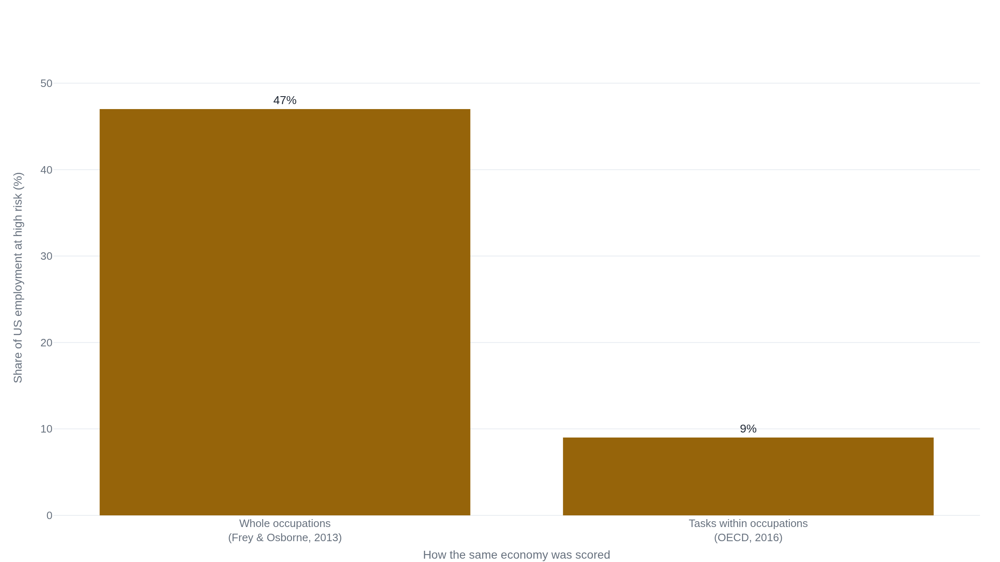

The famous 47% was never a prediction that jobs would vanish
Counting tasks instead of whole occupations drops the figure to nine percent, and the field still has no measured count of a single job lost to AI.
Why this matters
You have almost certainly met the claim that AI is about to put half the workforce out of work, and probably also the flat assurance that automation always creates more work than it destroys. Both come with numbers attached, and the numbers are hard to weigh against each other because they quietly count different things. This lesson takes the single figure the alarm has traveled on for a decade, the 47%, and follows it through the studies that produced it, cut it down, and updated it for large language models. The payoff is a way to read these numbers yourself: to tell a job that could be automated from a job that was, an exposed task from a lost one, and a measured result from a forecast dressed as one.
- 01
- No AI has to go rogue for humans to lose control: a related economic worry, and a real distinction. That one is control slipping away through institutions and markets; this one is jobs and wages.
- 02
- Keynes, "Economic Possibilities for Our Grandchildren" (1930): where the term was coined, and the optimism the modern version drops.
The forty-seven percent
In 1930 John Maynard Keynes gave a name to a fear that was already old: technological unemployment, joblessness that arrives when "our discovery of means of economising the use of labour" outruns "the pace at which we can find new uses for labour."1 He thought it temporary, a phase of adjustment on the road to a fifteen-hour work week.1 The modern version kept the name, dropped the optimism, and for a decade has traveled on one number.
In 2013 two Oxford researchers, the economist Carl Benedikt Frey and the engineer Michael Osborne, estimated that 47% of total US employment sat in a "high risk" category: occupations they scored with a probability of computerisation above 0.7. The window was deliberately vague, "some unspecified number of years, perhaps a decade or two."2 The method was concrete. They and a room of machine-learning researchers hand-labelled 70 occupations as automatable or not. A classifier learned from nine measured job traits, among them how much perception, creativity, and social intelligence each job demands. It then scored all 702 occupations in the US labor database, weighting each by how many people work in it.2 Serious researchers, a real method, a specific number.
One thing the number never claimed is easy to miss. Frey and Osborne wrote that they "make no attempt to estimate the number of jobs that will actually be automated."2 High risk meant an occupation's tasks looked computerisable, not that the jobs would go.
Counting tasks instead of jobs cuts it to nine
The 47% has a twin. In 2016 three economists at the OECD, Melanie Arntz, Terry Gregory, and Ulrich Zierahn, measured the same US economy a different way and got 9%.3 The gap is not a fight about facts. It is a fight about the unit you count.
Frey and Osborne scored whole occupations: if an occupation looked automatable, everyone in it counted as high-risk. The OECD team scored the tasks people actually perform, using a survey that records what individual workers do in a day, and counted a worker as highly automatable only when at least 70% of their own work could be automated.3 Almost no job is all automatable tasks. Bookkeeping clerks score 98% by occupation, yet once you look at what they do, only about a quarter of them work without the group work and face-to-face interaction that machines still handle poorly.3 Retail salespeople: 92% by occupation, 4% by task.3 Score the jobs and you get 47%. Score the tasks inside them and the same country comes out at 9%.

Which unit is right matters more than any figure after it, because every later estimate inherits the choice. And neither of these two numbers counts a job actually lost. Both count jobs a machine could, in principle, do.
From exposed tasks to real workplaces
When large language models arrived, the same task lens produced a newer number. The 2023 study "GPTs are GPTs" (Eloundou, Manning, Mishkin, and Rock) asked, task by task, whether access to a model could cut the time to do a piece of work by at least half at equal quality.4 It called such a task "exposed." About 15% of the average worker's tasks are directly exposed to the model on its own. Count the tasks that software built on top of the model could speed up, and roughly 80% of workers are in an occupation with at least a tenth of their tasks exposed, about 19% in one where more than half are.4
Those shares get repeated as though they forecast jobs lost. The authors say plainly that they do not. Exposure is "a proxy for potential economic impact without distinguishing between labor-augmenting or labor-displacing effects," and a high share "does not necessarily suggest that their tasks can be fully automated."4 A task a model can help with might disappear, or it might just get faster while the worker keeps the job and does more. Which one happens is not something you can read off an exposure score. You have to watch a real system.
Two of the first careful field studies watched, and they point opposite ways. At one software company's customer-support operation, economists tracked 5,179 agents across about three million conversations as a generative-AI assistant switched on team by team.5 Access raised issues resolved per hour by 14% on average, from a baseline near 2.6.5 The gain landed unevenly: the least-experienced agents got 34% more productive while the most experienced barely moved, because the tool spread the better agents' habits to newcomers.5 No one was displaced, and attrition fell. This is automation as a complement.
On Upwork, a large freelancing platform, a different team compared freelancers in the work most affected by generative AI, writing and coding, against less-affected work, before and after ChatGPT's release in November 2022.6 The more-affected freelancers saw their monthly jobs fall 2% and their monthly earnings fall 5.2% relative to the comparison group. Past success gave no shelter: the top freelancers were hit hardest.6 This is automation as a substitute. Both results are real, and both are small. They disagree because they measure different things: output per worker inside one firm, and demand for workers across one open market. Neither is the whole economy.
The ATMs that hired more tellers
The strongest reason to doubt the alarm is history, and the economist David Autor put it most cleanly in 2015. Automation substitutes for labor, as it is built to, but it also complements labor: automating some of a job's tasks raises the value of the tasks that remain, and often raises demand for the workers who do them.7
His case is the automated teller machine. ATMs spread from about 100,000 to 400,000 in the US between 1995 and 2010, exactly the machine you would expect to finish off the bank teller.7 Bank teller employment rose over those decades instead, from roughly 500,000 in 1980 to 550,000 in 2010.7 The machine did take over cash handling, and tellers per branch fell by more than a third. But cheaper branches let banks open far more of them, over 40% more urban branches, and the teller's job shifted toward the sales and relationship work a cash dispenser cannot do.7 The task was automated; the occupation grew.
Autor's deeper point is why some tasks resist automation at all. The hardest to hand to a machine are the ones people do by tacit judgment: "skills that we understand only tacitly."7 We know more than we can tell. As long as a job leans on those, automating its routine parts can leave the worker more valuable, not less.
So the alarm has a real bar to clear: why would this time be different? The most careful answer on offer is not doom but arithmetic. In 2024 Daron Acemoglu ran the task-based logic up to the macroeconomy and estimated that AI would add no more than 0.71% to US total factor productivity over ten years, about 0.07% a year, with GDP up around 1.1%.8 A refinement that assumes smaller gains on harder tasks pulls the productivity figure down to 0.55%.8 That is roughly an order of magnitude below the boldest industry forecasts.8 And Acemoglu names the reason the field studies may not stretch to the whole future. The gains measured so far sit in easy-to-learn tasks. The tasks still waiting to be automated are the hard-to-learn ones, where gains should be smaller.8 The teller's story protects workers only where the leftover tasks are genuinely hard to mechanize, which is exactly where the next round is headed.
The loudest number today has no study behind it
Now the present. The loudest current figure comes from Dario Amodei, who runs a leading AI company. In May 2025 he told an interviewer that AI could wipe out about half of entry-level white-collar jobs within one to five years and push unemployment to 10-20%.9 He framed it as a duty to warn. What does not exist behind the number is a public dataset or method. It is a warning from an interested party, not a study.9
The dismissal has the mirror-image flaw. A technology-industry think tank looked back in 2022 and announced that the predicted mass job loss "didn't happen": nine years on, the US had added millions of jobs and unemployment sat near 3.7%.10 But it fired at a claim Frey and Osborne never made, describing their work as a forecast that 47% of jobs "would likely be eliminated."10 Frey and Osborne had written the opposite, that they made no attempt to estimate jobs actually lost.2 The rebuttal knocked down a stronger forecast than anyone had issued, which is its own small lesson in what happens to the number once it is stripped of its definition.
Under both the doom and the dismissal sits one fact. In none of these studies is there a measured count of jobs actually lost to AI. There are risk categories, exposure shares, a productivity gain at one call center, a demand drop on one freelance platform, and a modest macro estimate. The most confident voices, on both sides, are surer than any of that evidence lets them be.
The takeaway
What to keep is a habit: ask what a number counts. Frey and Osborne's 47% counts occupations whose tasks look automatable. The OECD's 9% counts workers most of whose own daily tasks are. Exposure counts tasks a model could speed up. The two field results count output at one firm and demand on one platform. None of them counts a job that was actually lost, because no one has measured that yet. So both confident stories overreach: the half-of-all-jobs warning rests on no study, and the "it never happened" reply knocks down a forecast Frey and Osborne were careful not to make. What is genuinely known is smaller and less settled than either side admits. Whether this round ends like the bank teller or breaks that pattern comes down to the question Keynes asked in 1930 and no one here has closed: does new work appear as fast as the old is automated?
- 01
- Autor, "Why Are There Still So Many Jobs?" (2015): the historical complementarity case in full, with the teller data and the tacit-knowledge argument.
- 02
- Acemoglu, "The Simple Macroeconomics of AI" (2024): how the task-based logic scales to a ten-year productivity estimate, and why it stays modest.
Sources
- Marxists Internet Archive · John Maynard Keynes, "Economic Possibilities for Our Grandchildren" (1930)
- Oxford Martin School · Carl Benedikt Frey & Michael A. Osborne, "The Future of Employment" (2013)
- OECD · Melanie Arntz, Terry Gregory & Ulrich Zierahn, "The Risk of Automation for Jobs in OECD Countries," Working Paper No. 189 (2016)
- arXiv · Tyna Eloundou, Sam Manning, Pamela Mishkin & Daniel Rock, "GPTs are GPTs" (2023)
- NBER · Erik Brynjolfsson, Danielle Li & Lindsey R. Raymond, "Generative AI at Work," Working Paper 31161 (2023)
- CESifo · Xiang Hui, Oren Reshef & Luofeng Zhou, Working Paper 10601 (2023)
- Journal of Economic Perspectives · David H. Autor, "Why Are There Still So Many Jobs?" (2015)
- MIT Economics · Daron Acemoglu, "The Simple Macroeconomics of AI" (2024)
- Fortune · Chris Morris, on Dario Amodei's white-collar jobs warning (May 2025)
- ITIF · Robert D. Atkinson, "Oops: The Predicted 47 Percent of Job Loss From AI Didn't Happen" (2022)